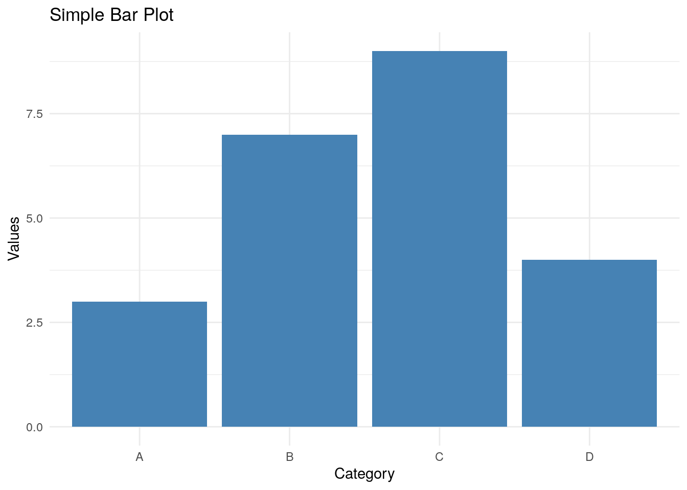

This is a very basic quarto document for sharing your code
This is a simple example of how to create a bar plot in R using ggplot2.
# Load necessary librarylibrary(ggplot2)# Create a simple datasetdata <-data.frame(category =c("A", "B", "C", "D"),values =c(3, 7, 9, 100))# Create a bar plotggplot(data, aes(x = category, y = values)) +geom_bar(stat ="identity", fill ="steelblue") +theme_minimal() +labs(title ="Simple Bar Plot", x ="Category", y ="Values")

Note
You can create a callout note by using the callout-note class.
Show some data your map
# Load required packageslibrary(leaflet)library(leaflet.extras) # Provides heatmap functionality# Define the latitude and longitude for Seattle, WAseattle_coords <-c(47.6062, -122.3321)# Generate some sample data around the Seattle areaset.seed(123) # for reproducibilitylat <-rnorm(100, mean =47.6062, sd =0.01) # latitude around Seattlelng <-rnorm(100, mean =-122.3321, sd =0.01) # longitude around Seattleintensity <-rnorm(100, mean =1, sd =0.5) # sample intensity values# Create a data frame for heatmapheatmap_data <-data.frame(lat, lng, intensity)# Create the Leaflet mapleaflet() %>%addTiles() %>%# Add default OpenStreetMap tilessetView(lng = seattle_coords[2], lat = seattle_coords[1], zoom =12) %>%addHeatmap(lng = heatmap_data$lng,lat = heatmap_data$lat,intensity = heatmap_data$intensity,blur =20, max =1, radius =15 )
Tip
You can create callout-tips! Just use the callout-tip class.
Quarto supports LaTeX-style math for rendering mathematical equations in documents. This type of math can be used to display both inline math expressions and block (display) math expressions. For example, the equation \(E=mc^2\) is an example of inline math, while the equation \[ A = \pi r^2 \] is the example of block math.
You can use mermaid to create diagrams in your documents. For example, the following code creates a simple flowchart:
graph TD; A[Start] --> B[Step 1]; B --> C[Step 2]; C --> D[End];
graph TD;
A[Start] --> B[Step 1];
B --> C[Step 2];
C --> D[End];